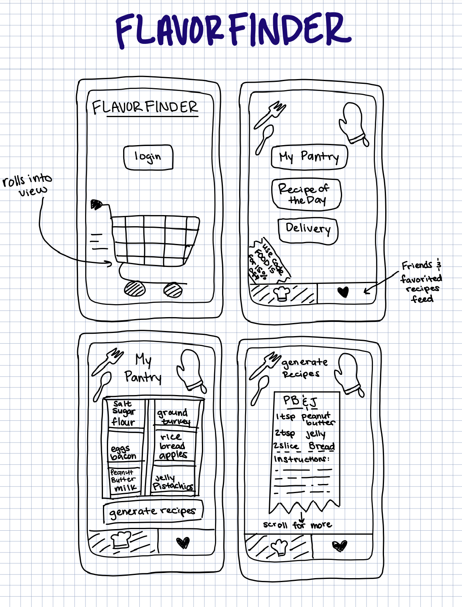
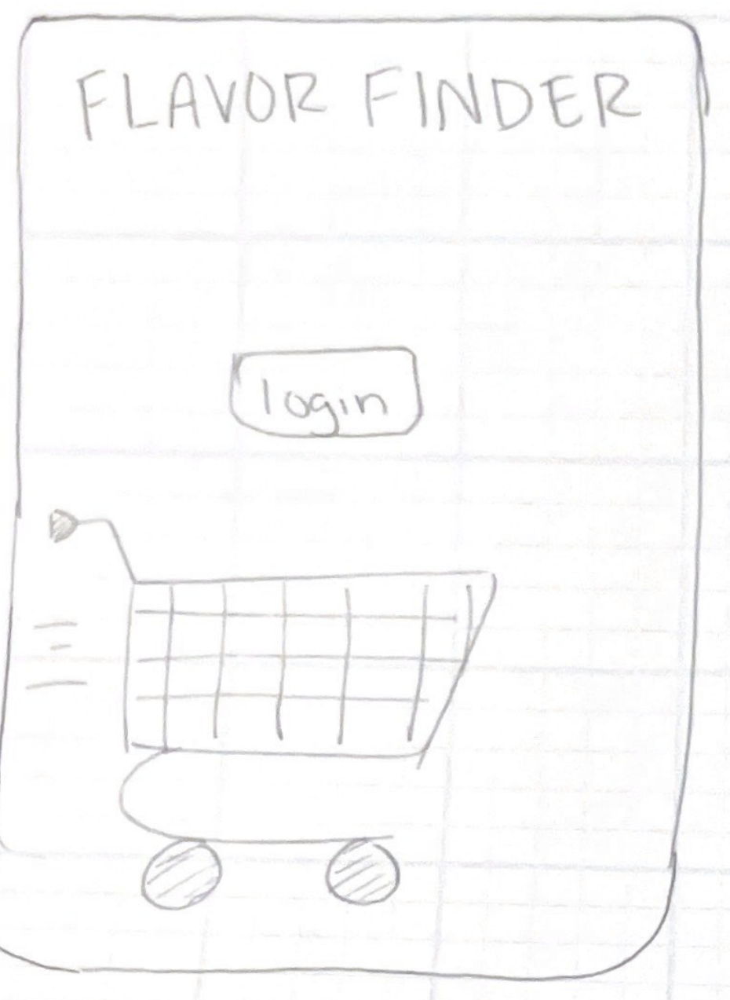

Problem Statement

Between 30-40% of food in the United States goes to waste, which amounts to a staggering 90 billion pounds per year and is worth $473 billion of food.
Affinity Diagram

Affinity diagram with 5 clusters and 20 ideas about food waste management.
Sketches
Sketches of a proposed application that can serve as a solution to the food waste problem.
Prototype
A video prototype of a proposed application to solve the food waste problem.